在Laravel框架中，使用renatomarinho/laravel-page-speed 扩展可以将blade模板渲染的html网页进行压缩、优化。可以节省了网络带宽，使我们的网站具有更快的访问速度。扩展包的文档中说明，可以自动优化网站，优化压缩 35%。接下来看一下如何使用：
composer require renatomarinho/laravel-page-speedphp artisan vendor:publish --provider="RenatoMarinho\LaravelPageSpeed\ServiceProvider"执行上述命令后会生成 config/laravel-page-speed.php 配置文件，定义了是否开启压缩和不需要压缩的url路径。对于某些你不想进行压缩的url可以配置到这里边。
扩展包的使用是通过一堆中间件来完成的，文档中提到了很多 中间件 不过大部分还没有实现，可以用的只有前面的这 7 个。我们添加这些中间件测试一下，注册到 web 中间件组中。
app/Http/Kernel.php
...
'web' => [
...
\RenatoMarinho\LaravelPageSpeed\Middleware\InlineCss::class,
\RenatoMarinho\LaravelPageSpeed\Middleware\ElideAttributes::class,
\RenatoMarinho\LaravelPageSpeed\Middleware\TrimUrls::class,
\RenatoMarinho\LaravelPageSpeed\Middleware\InsertDNSPrefetch::class,
\RenatoMarinho\LaravelPageSpeed\Middleware\RemoveComments::class,
\RenatoMarinho\LaravelPageSpeed\Middleware\RemoveQuotes::class,
\RenatoMarinho\LaravelPageSpeed\Middleware\CollapseWhitespace::class, // Note: This middleware invokes "RemoveComments::class" before it runs.
]
...这么多的中间件，我们总结了一下它们的作用：
转自：压缩 HTML 加速网页响应—— renatomarinho/laravel-page-speed
| 中间件 | 描述 |
|---|---|
| InlineCss | 将 HTML 中的行内样式，转换为一行单独的样式放在 header style 标签中 |
| ElideAttributes | 去除 HTML 中一些多余的属性 |
| InsertDNSPrefetch | 添加 DNS 预读取 标签 |
| RemoveComments | 删除 HTML 注释 |
| TrimUrls | 简化 URL，将 |
| RemoveQuotes | 去除一些标签的引用，src="foobar.com" 转换成 src=foobar.com |
| CollapseWhitespace | 去除 HTML 中多余的换行和空格 |
一般我常用的只有这4个
\RenatoMarinho\LaravelPageSpeed\Middleware\ElideAttributes::class,
\RenatoMarinho\LaravelPageSpeed\Middleware\RemoveQuotes::class,
\RenatoMarinho\LaravelPageSpeed\Middleware\CollapseWhitespace::class,
\RenatoMarinho\LaravelPageSpeed\Middleware\RemoveComments::class,当我们只开启这个中间件的时候，看的会更加明显：
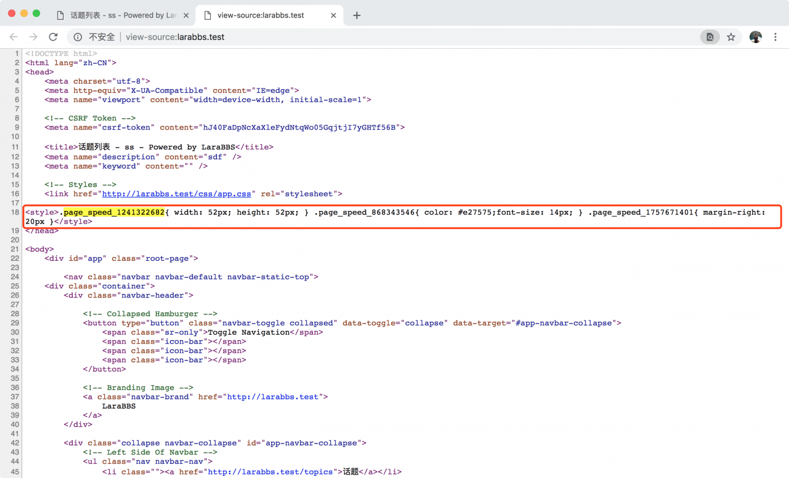
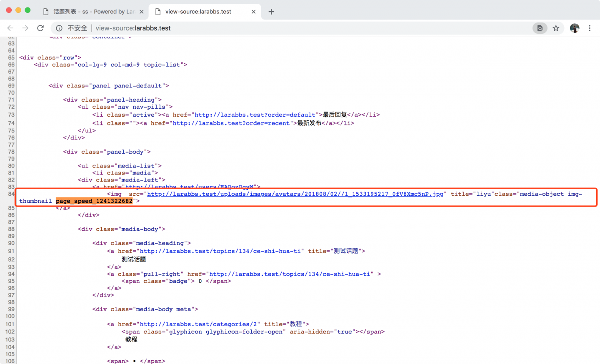
中间件去除了某些行内样式，用一个 class 替换，将样式合并成一行，放在 head 中，提前加载，非常有用。
主要作用就是替换一些默认的标签：
去除 from 表单中的 method="get" 属性，很少会这样用；
将 <button disabled>转换为 <button disabled>；
将 <option selected>Foobar</option> 转换为 <option selected>Foobar</option>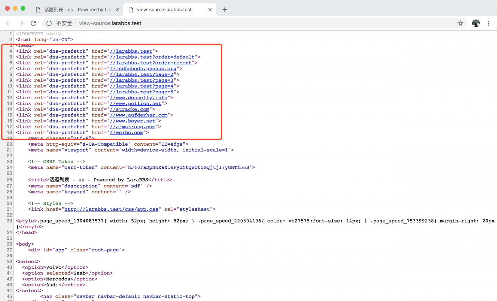
可以看到一些关于 DNS 预读取 的标签，也就是检查 HTML 中所有的链接，告诉浏览器提前去解析这些链接的 DNS，更快的加载图片，css 等资源，用户打开链接的速度也会更快。
由于DNS的级联特性，DNS解析时间从本地缓存结果的<1ms到数百毫秒不等。这对总页面加载时间有很大影响。此筛选器通过在HTML开头向浏览器提供提示来缩短DNS查找时间，从而允许浏览器预解析页面上资源的DNS。
去除所有的 HTML 注释应该很好理解：
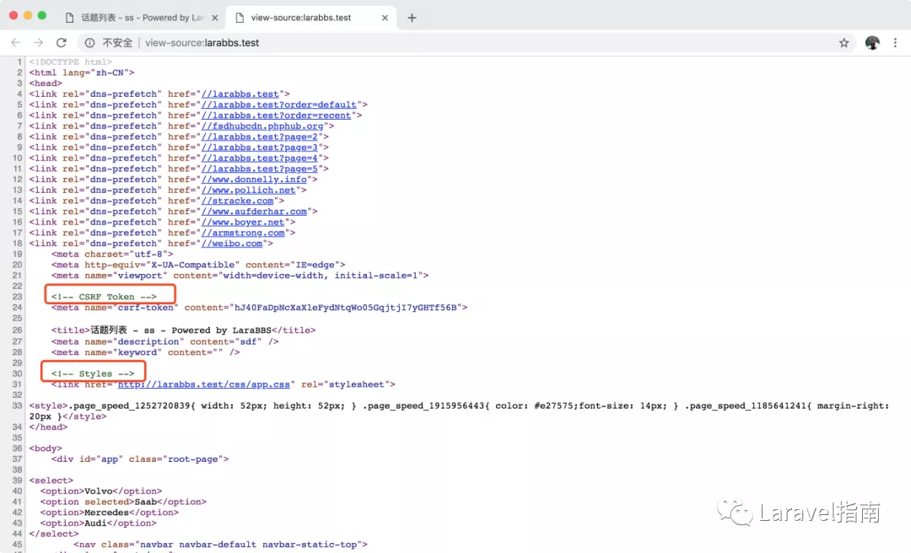
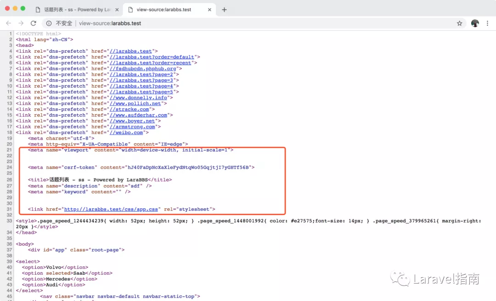
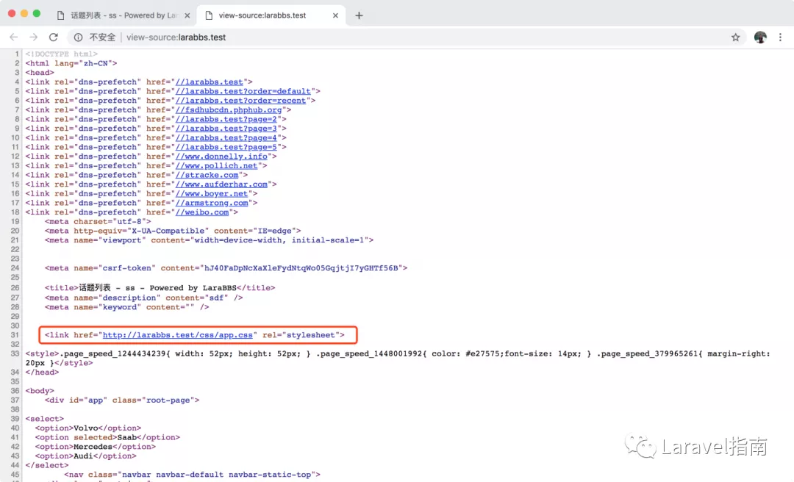
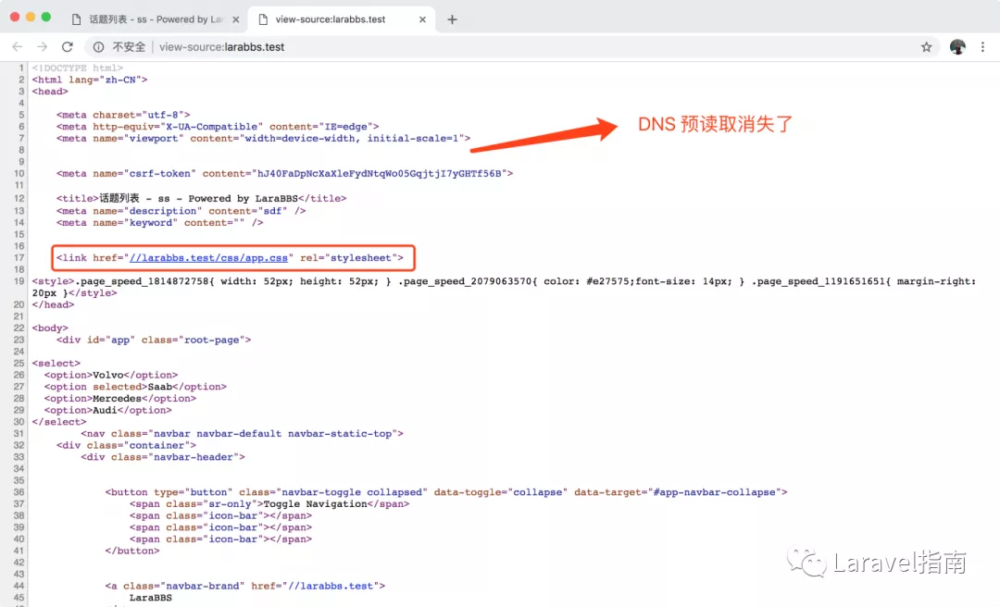
作用就是去除链接的协议部分，因为默认会使用当前 URL 的协议。
但是这时候你会发现上面 DNS 预读取的标签都消失了，我们解决一下这个 BUG，修改一下中间件的顺序，将 TrimUrls 放在 InsertDNSPrefetch 之前。
因为这些中间件是作用于请求的响应，其实执行的顺序，是从下往上的，放在下面的会先执行，TrimUrls 去除了协议，InsertDNSPrefetch 中使用正则匹配就会出问题了。
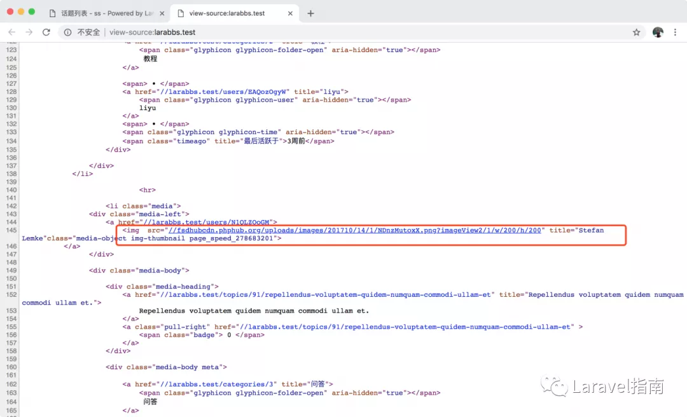
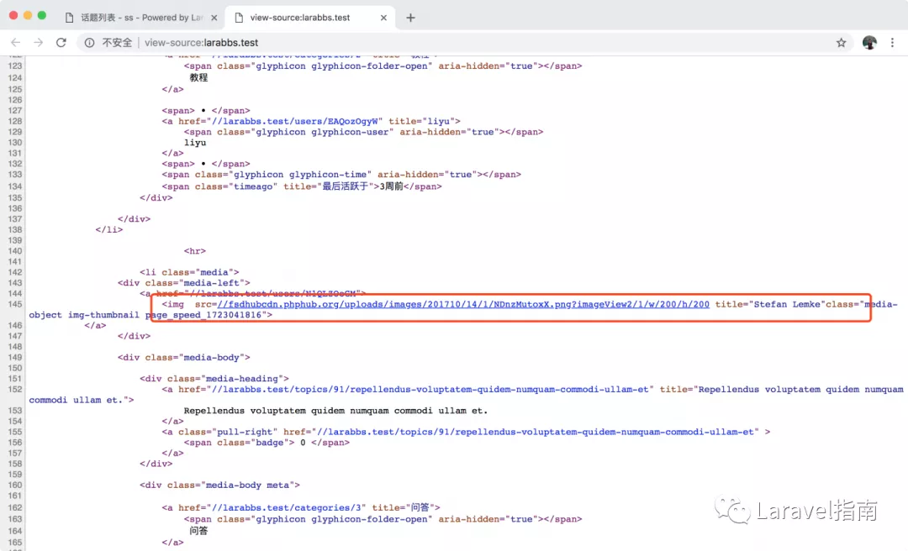
中间件会去除一些标签的引号，会作用在下面这些标签：
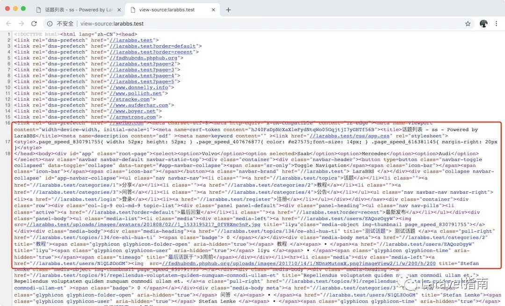
去除了换行以及空格，最终我们将 HTML 优化为上面这样。
添加中间加前后，用chrome的调试模式看一下请求的size,会发现请求包体积明显减小。从网络层面上减轻了带宽压力，加速了dns解析，加快了浏览器渲染速度。
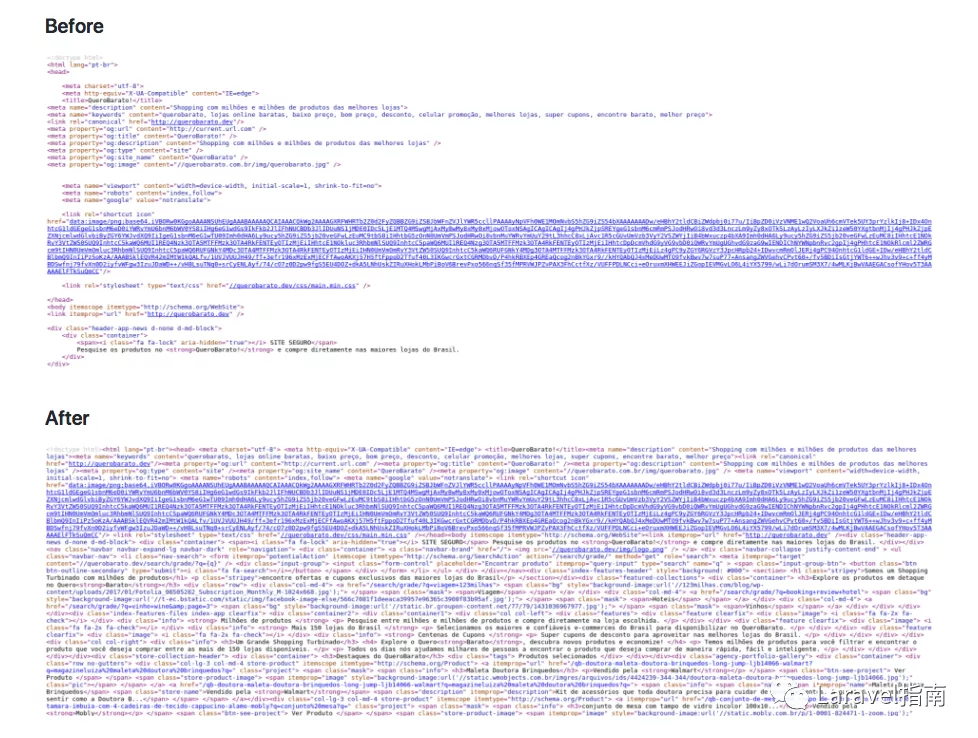
1、当blade模板中的js代码存在//单行注释时，通过renatomarinho/laravel-page-speed压缩后会将整个js代码//后面的注释掉，所以js代码中不能存在双斜杠单行注释，改成 /* */形式即可解决
2、对于存在代码段(pre code中内容)的html, CollapseWhitespace 会将代码段中的空格和空行删除，这样就不行了，会影响实际展示效果。
[1] GitHub仓库地址 : https://github.com/renatomarinho/laravel-page-speed[2] 压缩 HTML 加速网页响应—— renatomarinho/laravel-page-speed: https://learnku.com/courses/laravel-package/2019/compress-html-to-speed-up-web-response-renatomarinholaravel-page-speed/2318